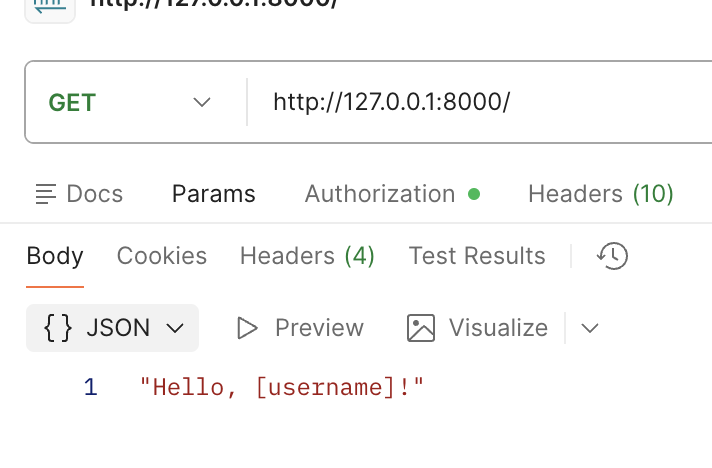
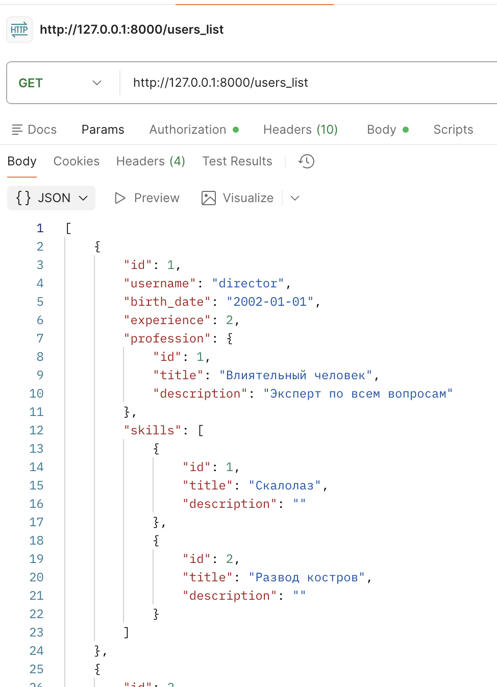
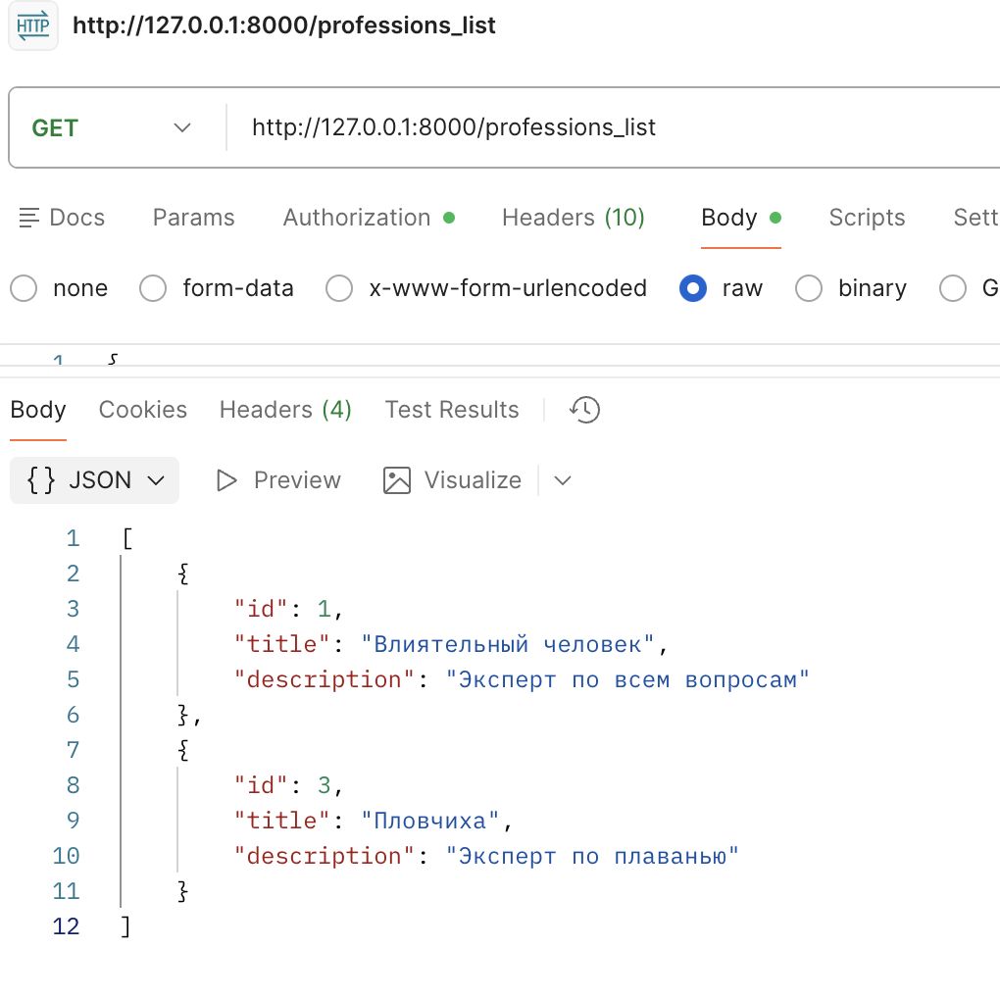
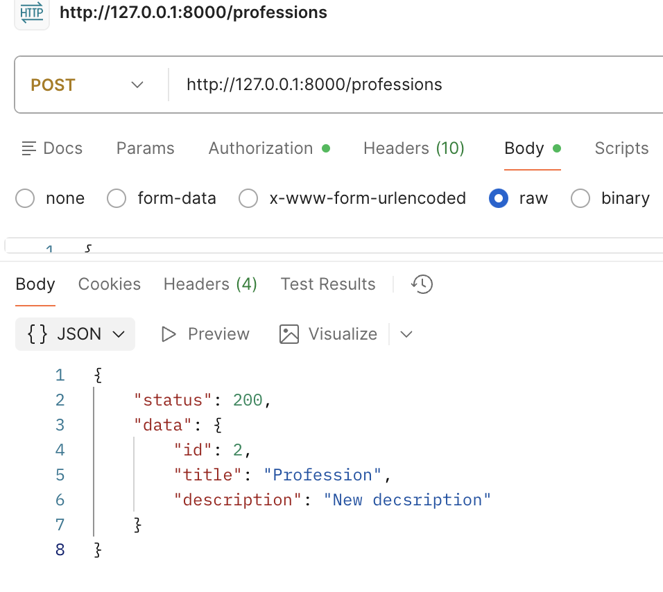
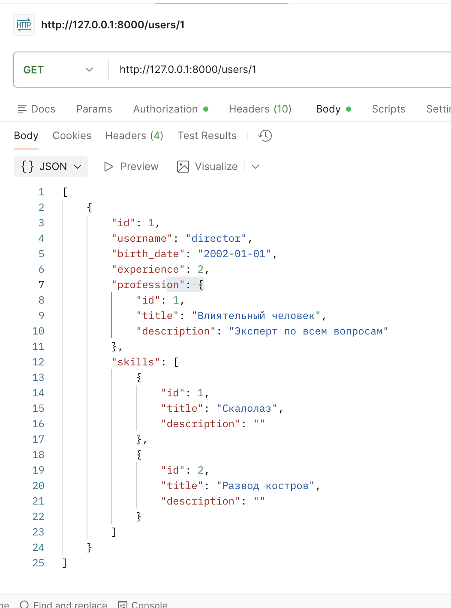

Практика 1.1. Создание базового приложения на FastAPI
Создание времнных БД по варианту:
временные БД в main.py
temp_bd_profession = [
{
"id": 1,
"title": "Влиятельный человек",
"description": "Эксперт по всем вопросам"
},
{
"id": 3,
"title": "Пловчиха",
"description": "Эксперт по плаванью"
}
]
temp_bd = [
{
"id": 1,
"username": "director",
"experience": 2,
"birth_date": datetime.date(2002, 1, 1),
"profession": temp_bd_profession[0],
"skills": [
{
"id": 1,
"title": "Скалолаз",
"description": ""
},
{
"id": 2,
"title": "Развод костров",
"description": ""
}]
},
{
"id": 2,
"username": "nastya",
"experience": 3,
"birth_date": datetime.date(2002, 12, 12),
"profession": temp_bd_profession[0],
"skills": [
{
"id": 3,
"title": "Плаванье", "description": "Опыт 10 лет"
},
{
"id": 4,
"title": "Готовка", "description": ""
}]
},
]
Создание моделей по варианту:
models.py
class Trip(BaseModel):
id: int
start_date: datetime.date
end_date: datetime.date
route: str
description: str
class TripMembers(BaseModel):
id: int
id_user: int
id_trip: int
class Skill(BaseModel):
id: int
title: str
description: Optional[str]
class Profession(BaseModel):
id: int
title: str
description: Optional[str]
class User(BaseModel):
id: int
username: str
birth_date: datetime.date
experience: int
profession: Profession
skills: Optional[List[Skill]] = []
class ProfessionCreateResponse(TypedDict):
status: int
data: Profession
class UserCreateResponse(TypedDict):
status: int
data: User
Эндпоинты:
main.py
@app.get("/users_list")
def users_list() -> list[User]:
return temp_bd
@app.get("/users/{user_id}")
def users_get(user_id: int) -> List[User]:
return [user for user in temp_bd if user.get("id") == user_id]
@app.post("/users")
def users_create(user: User) -> UserCreateResponse:
temp_bd.append(user.dict())
return {"status": 200, "data": user}
@app.delete("/users/delete/{user_id}")
def users_delete(user_id: int):
for i, user in enumerate(temp_bd):
if user.get("id") == user_id:
temp_bd.pop(i)
return {"status": 201, "message": "deleted"}
raise HTTPException(status_code=404, detail="user not found")
@app.put("/users/{user_id}")
def users_update(user_id: int, user: User) -> User:
for u in temp_bd:
if u.get("id") == user_id:
user_to_append = user.dict()
temp_bd.remove(u)
temp_bd.append(user_to_append)
return user
raise HTTPException(status_code=404, detail="user not found")
@app.get("/professions_list")
def profession_list() -> list[Profession]:
return temp_bd_profession
@app.get("/professions/{profession_id}")
def professions_get(profession_id: int) -> List[Profession]:
return [prof for prof in temp_bd_profession if prof.get("id") == profession_id]
@app.post("/professions")
def professions_create(profession: Profession) -> ProfessionCreateResponse:
temp_bd_profession.append(profession.dict())
return {"status": 200, "data": profession}
@app.delete("/professions/delete/{profession_id}")
def professions_delete(profession_id: int):
for i, prof in enumerate(temp_bd_profession):
if prof.get("id") == profession_id:
temp_bd_profession.pop(i)
return {"status": 201, "message": "deleted"}
raise HTTPException(status_code=404, detail="profession not found")
@app.put("/professions/{profession_id}")
def warrior_update(profession_id: int, profession: Profession) -> Profession:
for p in temp_bd_profession:
if p.get("id") == profession_id:
prof_to_append = profession.dict()
temp_bd_profession.remove(p)
temp_bd_profession.append(prof_to_append)
return profession
raise HTTPException(status_code=404, detail="profession not found")




